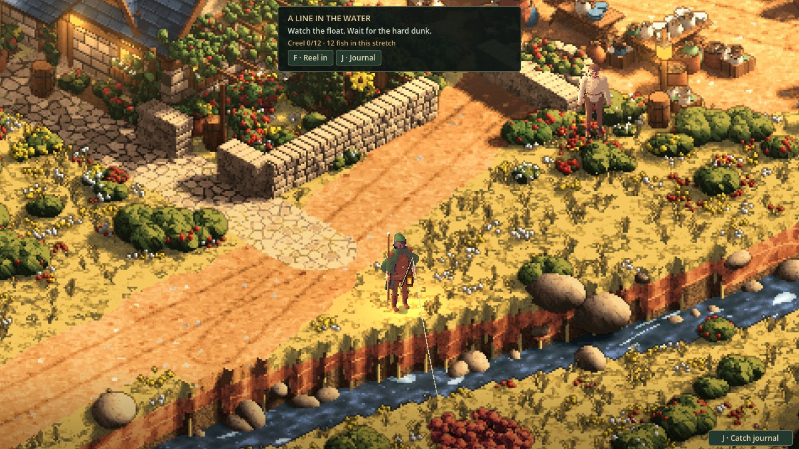
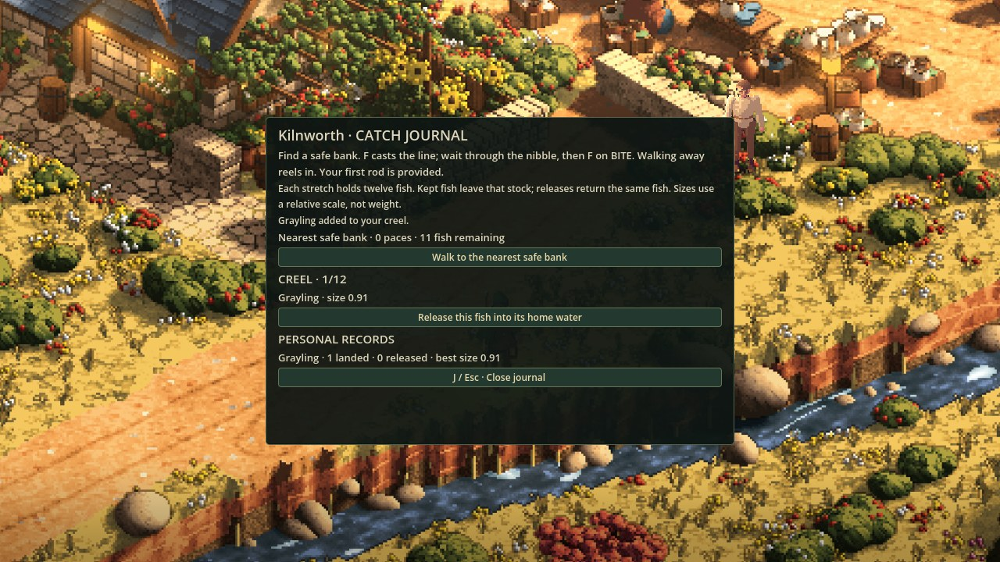

A line in the water
23 October 2026 · Day 32
Fishing has reached Sprawl’s playable town water. Cast from a safe bank, wait through the nibble, strike on the bite, and choose whether to keep the catch. A saved creel and personal journal give that quiet moment something lasting.

A reason to stop by the river
The towns have gained warmth, rain and signs of life above their roofs. The next question was what a traveller could actually do on reaching one. A river should offer more than a pleasant route past the houses. It should be somewhere to spend a little time, learn its habits and come away with a story.
Fishing now provides that pause. The first rod is provided, so there is no shopping errand before trying the activity. At a surveyed bank, cast with F or the Cast button. The float arcs out, settles on the water and starts to move. A nibble asks for patience. The hard dunk brings a clear BITE prompt and a brief chance to strike. Hook it in time and the line brings the fish to the bank.
You can keep the catch or release it immediately. Walking away reels the line in; a missed bite leaves the fish in its water. Escape brings in an active line without leaving the game. The controls should make a small activity easy to enter and easy to put down.
Starting from the actual water
Fishing existed in the older test world, but that did not make it an activity in the current game. Its water was represented differently. Moving the old controls across without checking the banks could have left a line cast through a house, from the wrong floor, or into a mill race.
This implementation starts with the town’s own stream and pond shapes. A bank needs dry ground the traveller can stand on, a float position inside the water, and a clear cast between them. A landing on another floor is not a bank simply because it looks close on screen. Waterfalls, working mill channels and bridges are excluded from this first pass.
The rod, line and float are drawn in the town, using its depth picture to fit them among the scenery. The native review takes place beside the existing stream in expanded Kilnworth. It uses the real game scene and controls, with the traveller placed at a surveyed bank for the test.
A fish keeps its identity
The catch is a particular fish from a particular stretch of water. Its species is part of its identity; a larger perch does not turn into a trout. Existing fish rules provide the species and relative size, while the new activity gives them a finite stock and a place in the player’s journal.
Each stretch holds twelve fish. Keeping a catch removes that fish from its stock. Returning a kept fish requires going back to its home water, and restores that same fish. There is no automatic refill behind the next cast. The creel holds twelve catches, and a full creel leaves the newly landed fish available to release.
The journal remembers the species landed, the number released and the largest catch on the game’s relative size scale. Those numbers describe the fish artwork’s scale; they are not kilograms. The creel, records and depleted stocks save together for each town and world seed, separate from the work on learned magic abilities.

What changed during review
The first native pass completed the activity with a named Grayling: cast, nibble, bite, strike, land, keep, reload and release. It also checked the less rewarding moments. A missed bite must not produce a catch. Cancelling must not consume stock. Loading a landed fish must not count it twice.
Getting through that loop exposed presentation work. The actions needed to read as buttons, and the journal needed a more deliberate shape than a panel stretched across the whole view. The follow-up pass gives the controls clearer surfaces and centres the journal in a scrollable panel that can fit a compact window.
Opening the journal or deciding what to do with a catch also needs to stop movement cleanly. Holding a walking key while closing a panel should not send the traveller stepping toward the river. The input now waits for those held movement keys to be released before walking resumes.
A finished activity, with room around it
This feature is ready for review as a complete fishing loop in towns with supported stream or pond plans and valid banks. Expanded Kilnworth is the town used for native acceptance. The default market can open the journal, but its differently represented outskirts water does not yet provide fishing banks.
The current fish stock is a small saved population model. It does not yet mean every specimen can be watched swimming through the river. There is no fish trader, cooking system or automatic restocking in this work. Those would give a catch further uses; the activity already has its own beginning, outcome and memory.
For now, the stream offers a reason to stop. A float settles, a nibble passes, and the journal has room for one more name.